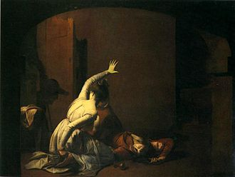
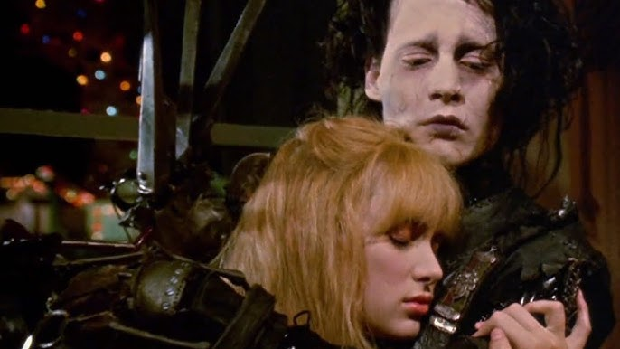

A literary blog exploring classic and modern text through a personal lens. Dive deep into the emotional, symbolic, and thematic layers of the stories my class has studied over this semester.
The Love was Loud. The Feud was Louder.
Posted June 4th, 2025 | By: Jacques Jacob
Romeo & JulietShakespeareTragedyLoveDramaPlay
A famous depiction of Romeo and Juliet at the iconic balcony scene from Act II Scene IIAn illustration of Romeo fighting Tybalt from Act III Scene I
Firstly, I want to say that Romeo and Juliet surprised me. In a good way I mean. I always thought that it was a cheesy love story that ends with both of them killing themselves. But when I actually read it, I realised that it is much deeper than that. It’s about two people trying to love each other in a world that is completely against them.
What stuck out to me most when reading it was how young they are. Romeo and Juliet are just kids trying to survive in a toxic Verona created by everyone. Their parents, their families, even the people they thought were helping, like the Nurse and Friar Laurence. The whole time, these adults are stubbornly making decisions for them instead of actually listening. It was frustrating to read. But then you should also realise that this is around the 1300s. The world would have been completely different. I can’t even imagine how difficult it would be if someone from the 21st century to go all the way back to the 14th and vice versa.
Another thing that hit me was the way love and violence were constantly side-by-side. Romeo and Juliet fall for each other in a moment that feels so pure and magical, but the world around them is full of duels, death, and revenge. Romeo kills Tybalt out of grief and revenge for the death of Mercutio. Juliet fakes her death just to escape her parents’ plan of marrying her to Count Paris. That doesn’t sound like romance. Just desperation. Desperation to leave Verona for a peaceful life.
But maybe this desperation is the whole point of the story. Shakespeare isn’t trying to write a picture-perfect love story. He’s writing about how messed-up the world can get when people are driven by hate. The feud between the Capulets and the Montagues is basically just a petty drama. No one remembers why they’re fighting, but everyone’s willing to give up their life over it. It’s scary how relevant that is in our world today despite Romeo and Juliet taking place seven centuries ago.
At the end, both Romeo and Juliet are dead. Not because their love was flawed – I’m sure they could have lived a great life together – but because of the world around them. Which again, still applies in our world despite the story being set centuries ago. People judge you for the people you love, where you’re from, and how you live. These judgements can destroy something beautiful.
I would say that Romeo and Juliet isn’t just a tragic romance. It’s a powerful look at how love can get crushed under pressure. Not because the feels aren’t real, but because the world around it is messed up. The play does a great job showing how hate, pride, and bad communication can ruin something so beautiful
Would I pick it up again just for fun? Honestly, probably not. But I totally understand why it’s still such a classic after all these years. If you’re planning to read it, just brace yourself — there’s a ton of chaos and a serious amount of heartbreak ahead.
Comments
@literaturelover42: I never really thought about how much control the adults have. It's kind of heartbreaking to see how little say they get.
Jacques Jacob: Thank's @literaturelover42! It's like they're just pawns.
@dramaqueen98: Totally agree on what you say about the chaos! The whole feud makes everything worse.
Jacques Jacob: Thank's @dramaqueen98! Literally every time someone made a decision, I was like, "Please don't make this any worse" — then the immediately made it worse 😭. Glad you liked it.
@bookishbee: Great review! I always thought the love story was cheesy, but your post made me see the bigger picture behind the tragedy.
Jacques Jacob: Thank's @bookishbee! I thought it would be cheesy too, but it was way different to what I expected!
Made to be Different. Treated like a Threat.
Posted June 6th, 2025 | By: Jacques Jacob
FilmTim BurtonFantasyLove
A picture from the film Edward Scissorhands showing Edward cutting shrubs in the pastel neighbourhood with his scissor-hands.A picture from the film Edward Scissorhands showing Kim dancing in the falling ice shavings as Edward is sculpting an angel out of ice.A flashback from the film Edward Scissorhands showing Edward with his inventor, who died before finishing his hands.
I didn’t expect Edward Scissorhands to be this good! At first glance, it feels like a quirky fantasy — a guy with scissors for hands getting adopted into a pastel suburb. But beneath all this weirdness, it is really a story about being judged, misunderstood, and ultimately rejected for being different from societal norms.
What stood out to me when I was watching the movie was how out of place Edward. He walks into a world full of identical pastel-coloured houses and perfect lawns which is the complete opposite of him. He’s quiet, awkward, dressed in black, and has scissors for hands. Instead of trying to understand him, the neighbourhood either feared him or used him. The moment he stops being ‘useful’ or entertaining, they turn on him.
It reminded me a lot of how people treat those who don’t fit into what society calls ‘normal,’ whether that’s because of how they look, act, or express themselves. Edward did not mean to be dangerous, but people assume he is. He creates really beautiful things (hedge sculptures, hairstyles, ice art) despite this, he can’t truly connect with anyone because of something he can’t control. That’s what made it so sad to watch. It’s not just that he’s lonely — it’s that the world makes him lonely.
I can really relate to this. My younger brother has cochlear implants, and we get a lot of weird looks when me and him are out doing errands. He’s only 11 years old, and he didn’t choose any of it — he’s just trying to be like any other kid. But he often can’t. I see him playing by himself in the cul-de-sac or at a nearby playground, and it hurts. I try to play with him when I can, but sometimes I’m busy with other things, and I feel guilty about that. He’s been subject to bullying too, even if he doesn’t always admit it. Watching Edward go through something similar hit really close to home.
Edward’s relationship with Kim is where the movie gets even more emotional. She’s the only one who truly sees him for who he is. The snow scene, where she dances as he carves ice, felt like the one moment Edward was able to create something beautiful and share it with someone he cared about. But even that doesn’t last.
By the end, Edward has to go back to living in isolation because the world decides he doesn’t belong. It’s not fair — but that’s kind of the point. Edward Scissorhands isn’t meant to be a happy-ending story. It’s a reminder of how people can turn something different into something scary, and how easy it is for someone kind to be pushed out just for not fitting in.
As a movie, I really liked it. It’s emotional without being overly dramatic, and the visuals — especially the contrast between the mansion and the suburb — make the message even stronger. If you’ve ever felt too weird, too quiet, or too “not normal,” you’ll definitely relate to Edward. In my honest opinion, Edward deserved better.
Comments
@quiet_thinker: I love how you connected Edward's story to your brother. That made it so real. It's heartbreaking how quick people are to judge what they don't understand.
Jacques Jacob: Thank's so much @quiet_thinker. It honestly felt personal watching it. That's something I didn't expect from this film. I'm glad it came through in the post. Glad you enjoy it!
@em_arts: You're right about the visuals! The pastel-coloured suburb versus the dark mansion was such a cool contrast. It showed how fake the 'normal' can be.
Jacques Jacob: Yes you're right @em_arts! It's like everything looked perfect on the outside but was actaully kind of messed up. The contrast made the message even stonger for sure.
@filmwatcher_17: The scene with the snow always gets me. It's so beautiful and sad at the same time, especially knowing that Edward can't really have what he wants.
Jacques Jacob: You're right @filmwatcher_17! That one moment where he was just happy and connected, then all gone. That scence really stuck with me.
Romeo and Edward Side-by-Side
Posted June 9th, 2025 | By: Jacques Jacob
Literary AnalysisThemesSymbolismChracter Study

A depiction from the Romeo and Juliet Act V Scene III showing Juliet kneeling beside Romeo's body and draws a dagger to kill herself in the Capulet tomb.

A picture from the film Edward Scissorhands showing Kim saying goodbye to Edward for the last time, knowing they can't be together even though they care for each other deeply.
At first, Romeo and Juliet and Edward Scissorhands might seem like completely different stories. One is an old-school Shakespearean tragedy, the other a Tim Burton film about a guy with scissors for hands. But after I thought about both, I started noticing how similar they are when it comes to their core themes which are: love that doesn’t stand a chance, characters who are completely misunderstood, and the way isolation can shape someone’s entire life.
Let’s start with Romeo and Edward. They’re both very intense with their emotions, and they fall hard, Romeo for Juliet, and Edward for Kim. Neither of them really got a chance to experience a ‘normal’ relationship. Romeo’s love is blocked by family hate. Edward’s love is blocked by who he is – or at least, what people think he is. In both stories, the love is real, deep and profound, but it isn’t enough to fix the world around them.
Another similarity is how fast things go downhill. Romeo and Juliet fall in love and are married within the span of days, and their story ends in death. Edward is welcomed into the neighbourhood for only a little amount of time before things so downhill. In both cases, the outside world, whether it’s society, family, or fear, can ruin something that could have been very beautiful.
One thing that really stuck with me in both stories is how badly people treat what they don’t understand. Juliet is expected to marry Count Paris because that’s what the environment around her wants, even though she loves someone else. Edward is expected to be dangerous just because of how he looks or moves. No one really takes the time to see who people are underneath. I’ve seen this happen in real life with my brother and his cochlear implants, people judge based on one thing, and it can totally change how someone is treated.
The endings are also really similar in how tragic they are. In Romeo and Juliet, both characters due to miscommunication and pressure. In Edward Scissorhands, Edward survives, but is forced to go back into hiding, completely cut off from everyone. Either way, love doesn’t win. The world around them is too cruel, too chaotic, or just not ready for people like them.
Personally, I connected more with Edward Scissorhands because it felt closer to my own life. Not the Scissorhands part obviously, but the loneliness and being misunderstood. I see this often with my brother struggling to keep up with me and friend’s fast-paced conversations. Romeo and Juliet is more dramatic and poetic, but at the core, both stories made me feel the same thing: sadness for people who just wanted to love and be loves, but couldn’t because of the world they lived in.
They’re both powerful in their own way. I don’t think either one is supposed to leave you feeling happy – they’re meant to make you think. And they definitely did.
Comments
@literaturelover42: I never thought to compare these two stories before, but you're right. They both deal with love being crushed by the world around it.
Jacques Jacob: Thank you @literaturelover42! Both stories show how love can't survive when people refuse to accept it. It's kind of heartbreaking to see.
@cinema_book_worm: The part where you talked about people treating what they don't understand poorly was so true! That's a theme I've never noticed in Romeo and Juliet until you brought it up.
Jacques Jacob: Yeah, I didn't notice it either at first! But once I saw how similar it was to Edward’s experience, it just clicked. It's wild how timeless that idea is. Glad you enjoyed it @cinema_book_worm!
@jules-and-thoughts: This made me realise that both stories don't really have villians. It's just a world that refuses to change. It makes the ending even sadder somehow.
Jacques Jacob: That's such a good point @jules-and-thoughts! The tragedies weren't caused by one bad person. It was everyone’s choices and the system around the,. It really makes you think deeper.


Comments
@literaturelover42: I never really thought about how much control the adults have. It's kind of heartbreaking to see how little say they get.
Jacques Jacob: Thank's @literaturelover42! It's like they're just pawns.
@dramaqueen98: Totally agree on what you say about the chaos! The whole feud makes everything worse.
Jacques Jacob: Thank's @dramaqueen98! Literally every time someone made a decision, I was like, "Please don't make this any worse" — then the immediately made it worse 😭. Glad you liked it.
@bookishbee: Great review! I always thought the love story was cheesy, but your post made me see the bigger picture behind the tragedy.
Jacques Jacob: Thank's @bookishbee! I thought it would be cheesy too, but it was way different to what I expected!